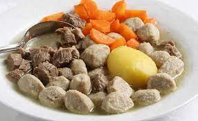

Sodd

Description
Sodd is a traditional dish from Trøndelag area of Norway.There are a lot of different variants of sodd
but all contain the same basic ingredients.
Adding carrots and potatoes is optional and can also be added to the sodd itself. The dish is served with flatbread and rootbeer.
Ingredients
- 1 kg Stew meat of lamb
- 1 l Water
- 1 tbsp Salt
- 800 g Potatoes
Sodd balls:
- 250 g Gound beef of lamb
- 1 tsp Salt
- 0,25 tsp Potatoflour
- 0,25 tsp Ground ginger
- 0,25 tsp ground nutmeg
- 0,25 tsp Pepper
- 0,75 dl Whipping cream
Steps
- Put the stew meat in a pot and add water and salt
- Bring it to a boil and lett the meat simmer for ca. 2 hours til it loosens from the bone
- Cook the potatoes
- Remove meat from the stock. Let the meat cool and remove bones and fat
- Cut the meat in cubes of 2x2 cm
- Mix ground beef and salt until sticky
- Add spices and potaoflour and dilute with cream
- Shape into small balls and add them to the stock. Let the balls simmer for 10-12 minutes
- Cook carrots in a separate pot
- Add meat back in the stock